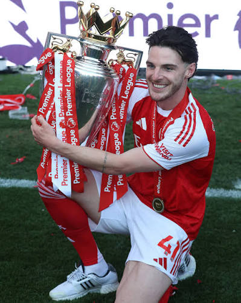

The energy.
There is something satisfying about watching a midfielder who keeps moving, helping out, and finding space to be useful.
WORK RATEAN UNOFFICIAL LITTLE CORNER OF FOOTBALL
A new favourite.
A new way to watch the game.
The first thing that really impressed me was Rice's two stunning free-kicks against Real Madrid. I love his tireless running and the energy he brings to every game. Seeing him win the 2025/26 Premier League title with Arsenal and help England finish third at the 2026 World Cup made me admire him even more. I also love his childhood friendship with Mason Mount — a reminder that football is about more than trophies.
READ MY NOTES
01 / FIRST IMPRESSIONS
I'm new to following him closely, so these are simple things that have caught my eye — not a complete analysis of his game.
There is something satisfying about watching a midfielder who keeps moving, helping out, and finding space to be useful.
WORK RATEI find myself noticing the quieter moments: reading danger, covering a teammate, or being in the right place at the right time.
READING THE GAMEDefending one minute and helping an attack the next — he's a reminder that midfielders connect so many parts of football.
ALL-ROUND MIDFIELD02 / THE PERSON BEHIND THE PAGE
I don't have to know everything about a player to enjoy watching him.
I've admired Thomas Müller for his clever movement and Alessandro Nesta for the calm elegance of his defending. Declan Rice is a newer favourite, and he's making me look at a different part of the pitch.
I support AC Milan, but that doesn't stop me from appreciating a player at another club. Sometimes, the best part of being a football fan is finding someone new who changes how you see the game.
03 / BEYOND NO. 41
This page is about Rice, but my football story has more than one shirt.
The club I support. Always a special place in my football heart.
A national team I've followed with real affection.
The team I was rooting for at the 2026 World Cup.
A NOTE TO MY FUTURE SELF